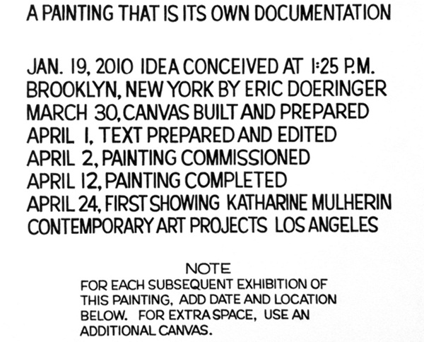
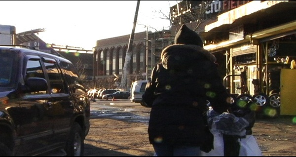

-
Words and Other Crimes: Volunteer Lawyers for the Arts at Maccarone
by Alice Gregory September 1, 2010
Eric Doeringer, A Painting That Is Its Own Documentation, 2010 via
For people who write about art, nothing is more demoralizing or laughable than a bad press release. And almost all press releases are bad. Not just bad in the normal ways that art criticism can be bad: the meaningless abstractions spouted by people who haven’t been forced to reread the critical texts they reference since graduation a decade ago; the reliance on an anemic visual vocabulary; the lack of humor. No. Press releases also actually contain real errors: errors of content and syntax and diction. I draw my breath the moment I read the words “For Immediate Release.” Oh shit. What now? What this time? What have they irrevocably said?
Reviewing a show goes like this: you walk in, you take a look around, you ask the gallery assistant for a press kit, you take another look around, you read the press kit, you take another quick look around, you go home, you reread the press kit, if necessary, you return, often multiple times, and then you write up the experience. For better or worse, the original text bears a trace in all subsequently written texts. I really can’t figure out why galleries don’t just pay qualified writers $150 to draft up their releases; a small sum would go a long way in preventing the dissemination of the illiteracy that counts for press, and furthermore, it would prevent the inevitably erroneous and awkwardly-phrased reviews spawned by the first press release, written by god knows who.
Angie Waller, Beauty for Ashes, 2010 via
This is all to say that I appreciated the Volunteer Lawyers for the Arts & Law Residency exhibition that’s currently up at Maccarone. Finally! A show of art with words that matter! According to the organization’s own literature, the Volunteer Lawyers for the Arts & Law Residency “provides an intellectual and artistic setting for participants to engage in ongoing discussions and debates that examine the overlap and disconnect between artistic production and the law from historical, social, ethical and philosophical standpoints.” This year’s twelve participants (seven artists and five writers) examine various points of intersection between artistic production and the law. The show’s press release (it’s actually readable and informative; that’s why I’m bothering to quote from it) explains that the “artists included in the Exhibition move beyond the representational aspects of law to explore and confront matters of intellectual and real property, contracts, freedom of speech, and moral rights of the artist.”
Though described as a collaboration between the non-profit and the gallery, Maccarone’s influence seems limited to their generous space donation more than anything else. None of the work in the show is by Maccarone artists, and for the two weeks the show is up, a receptionist from the Volunteer Lawyers for the Arts & Law replaces the normal gallery assistant. There’s a cognitive dissonance at play that comes from walking into a gallery known mostly for its young and reckless artists (Where are the smashed cars? The vials of cocaine? The reproduced pop artifacts?) and being confronted with the work of people who read and write for a living. You can tell the difference.
Eric Doeringer, who in the past has sold bootleg copies of contemporary art, printed fake Art Basel VIP cards, created a tongue-in-cheek “fan site” dedicated to Matthew Barney, embroidered the “Polo” logo by hand onto generic shirts, and recreated several books by conceptual artists, here perfectly recreates a John Baldessari wall drawing. It’s hung across from a series of canvases by Brooklyn-based artist and editor Charles Gute. These depict the grammatical errors in works by Robert Barry, Douglas Huebler, Yoko Ono, and Sol Lewitt. Gute uses standard proofreading marks – in red ink, no less – to correct instructions written by conceptual artists, instructions meant to be hyper-specific so as to be accurate enough that the pieces they describe are endlessly and hand-lessly recreate-able. My favorite edit: “Ambiguous pronoun referent – please be more specific.”
Charles Gute, Correcting Barry, 2009 via
Other works are more literally litigious and political in their content, like Angie Waller’s project that follows multiple legal cases pertaining to copyright and the Visual Arts Rights Act of 1990 (VARA). Bettina Johae, who has a background in architecture, takes up the issue of eminent domain with a red and white inkjet map of Manhattan (The Upper East Side – a stretch of clear white – appears to be the only neighborhood without seized plots). This is accompanied by a series of postcards from forgotten areas of Greater New York particularly subject to the law. A mural-scale wall painting, customized street vending cart, and a canvas portraying superimposed rabbits from the media and advertising add jolts of pictorial energy to an otherwise text-heavy, black-and-white collection of work.
Most wordiness in contemporary art is infuriating and falls into a category I’ve long-called “fake architecture math,” a twee trope that seems to be contagious within certain circles (Roni Horn, Matthew Barney). These are those faux calculations, often tiny and in graphite, that cast a cerebral air to an otherwise not-at-all-intellectual piece. Professorial numbers at the bottom of a landscape, compass markings in the margin of a photographic negative; the scribbles are banal but tasteful, like insisting upon writing grocery lists in graph paper Moleskins. There’s none of that here though. In this show, words count for something.